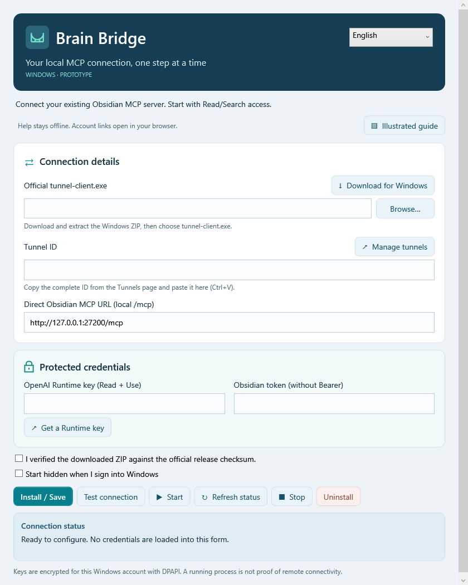

Set up Brain Bridge, step by step
Download the Windows client, find your Tunnel ID, and complete the form without typing PowerShell commands.
Community prototype · Guide reviewed: 8 October 2026 · Text and images are bundled offline. Account links require internet access and your own sign-in.
1) Download the Windows client
Open official downloadsExpand Assets on the release page; you may need Show all assets. Choose the full tunnel-client package, not a runtime variant or a Source code archive.
- Intel/AMD Windows PCs:
tunnel-client-v…-windows-amd64.zip. - Windows on ARM:
tunnel-client-v…-windows-arm64.zip. Check Settings → System → About → System type if unsure.
The version and exact filename can change. A supported download may also be available from your Platform Tunnels page.
Use Extract All on the ZIP. In Brain Bridge, select Browse, then choose tunnel-client.exe in the extracted folder.
Before selecting the checksum confirmation, compare the downloaded ZIP’s SHA-256 with its entry in SHA256SUMS.txt from the same release. You can use a graphical SHA-256 utility you trust. Brain Bridge does not automatically verify the published download checksum. Do not confirm it unless you checked it.
2) Find and copy your Tunnel ID
Open Tunnels managementSign in and select the correct organization. Find the tunnel for this connection in the Tunnels list. Copy its complete ID; the tunnel’s name and the browser’s URL are not its ID.
In Brain Bridge: click the Tunnel ID field and press Ctrl+V.
If you do not have a tunnel and are permitted to create one, choose Create tunnel, enter its name and the appropriate organization/workspace scope, then copy the new ID. If the page or permission is unavailable, contact your organization administrator. Brain Bridge cannot grant account access.

The ID starts with tunnel_. Copy the entire value without spaces; do not substitute an example ID.
3) Create a restricted Runtime key
Open Runtime API keysIn the tunnel’s organization, create a Runtime API key. Choose Restricted permissions and Tunnels: Read + Use. Paste it only into the masked OpenAI Runtime key field. Do not use an Admin key for this field.

Both your principal’s role and the key’s restrictions must allow the required access. Ask your administrator to check the role if options are missing or access is rejected. Never include a key in screenshots, messages or reports.
4) Get the Obsidian endpoint and token
In Obsidian’s MCP Connector settings, find the direct local server URL and a token for the same vault. Tokens are usually managed under Access Control; exact labels depend on the plugin version.
The URL must refer to this computer with path /mcp. http://127.0.0.1:27200/mcp is only an example; use your actual port. Do not enter a Codex broker URL or a website URL. Paste the raw token without Bearer into the masked Obsidian token field.
The − button minimizes settings; × closes settings without stopping the tunnel. Use Stop to stop the tunnel. During an active operation, wait for it to finish before closing. Hover over a long status message to read the full text without scrolling.
5) Finish setup and connect
Choose English or فارسی at the top of the window. Labels, status messages and the illustrated guide follow the selection; file paths, IDs and URLs stay left-to-right. Switching language preserves field values and does not start any operation.

Enter your settings and select Install / Save; this also tests the connection. Then select Start and Refresh status. Login startup is enabled only if you select it.
Test connection performs a separate check. Secret fields are cleared after an operation, so re-enter both keys before saving if you tested first. Use Stop before updating settings. Uninstall asks for confirmation and removes this installation’s local data; your vault and third-party executable remain.
A running process or ready local endpoint is not proof of a successful remote ChatGPT tool call. Test that separately with a test vault and limited Read/Search access. This is an unsigned prototype, not a production certification.